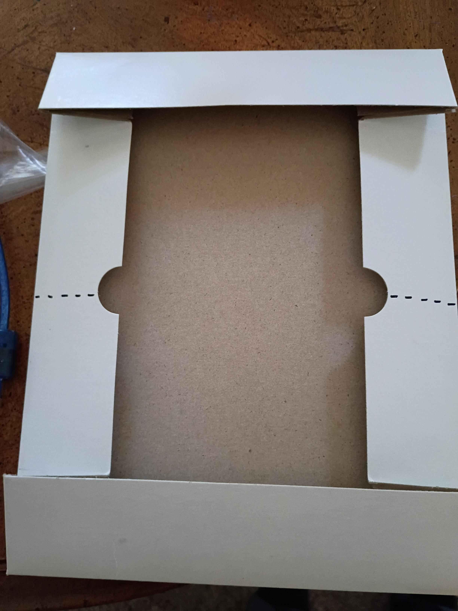
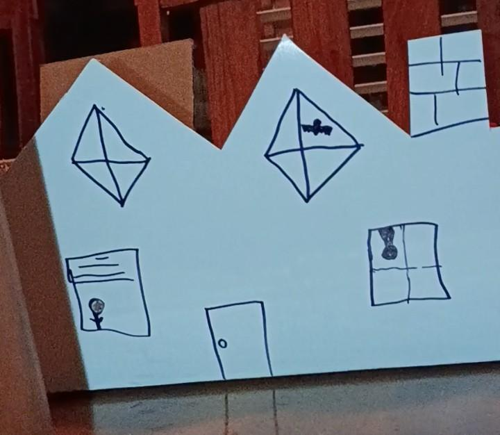
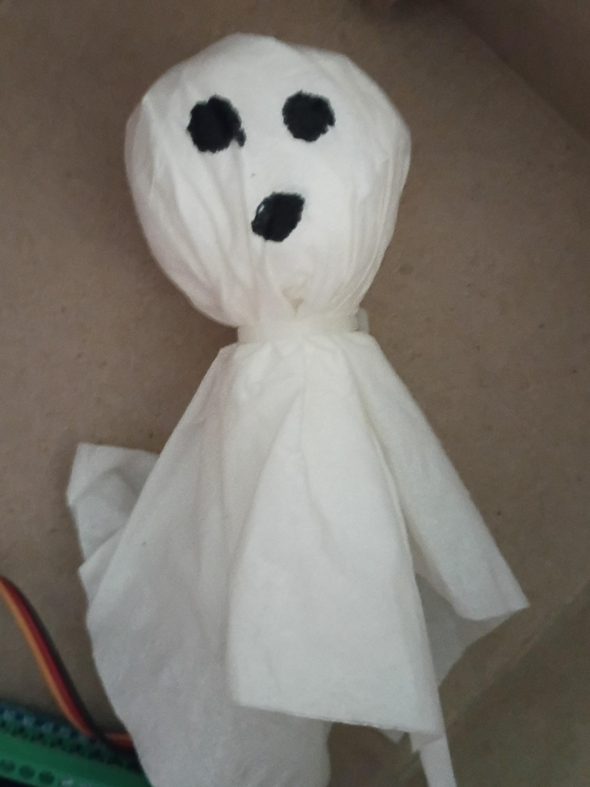
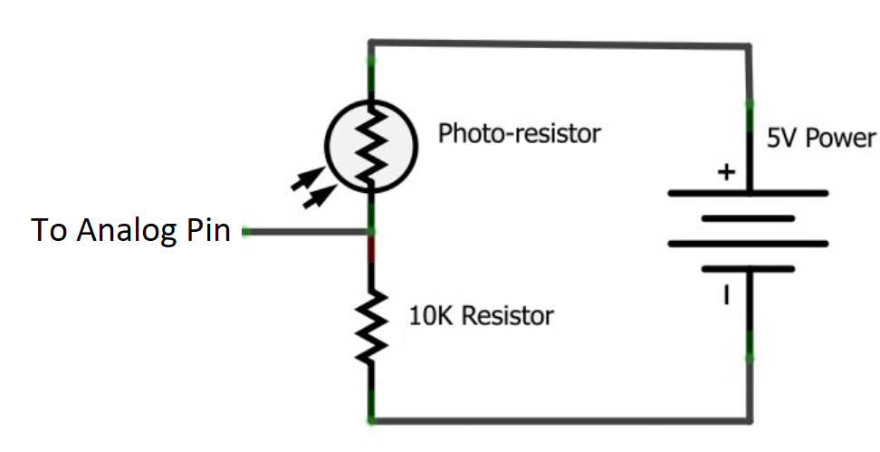

Halloween Animatronics Workshop#
This workshop was designed to introduce first-year engineering students and high school students to animatronics during the Halloween season. It is structured like an Instructables guide, but written with educators in mind so you can easily run this in your classroom, lab, or makerspace.
Animatronics are often seen as these complex, human-like robots that can either act like animals or sing a song on stage at a theme park.
The main goal of this workshop is to show students that you don’t need crazy equipment, specialized tools, or a lot of initial money to get started in animatronics or robotics in general. The neat thing about simple robotics and animatronics projects is that the electronics and code don’t actually change a whole lot. The example we are using in this workshop can be applied to a wide variety of animatronics that react to light or movement. The most time-consuming part—and arguably the most fun part—is developing the shells and environments that your animatronics live in. Those giant 12-foot skeletons in front yards can be set up in a very similar way; the main difference is that you will likely need bigger high-torque motors, heavier mechanical rigging for the arms and head, and a weatherproof enclosure for your electronics.
End Product#
The end product of this workshop is a small animatronic diorama of a haunted house, grave, creepy tree, or whatever spooky setting you decide to build. A ghost, spider, bat, or other creepy figure pops out when someone or something moves past and casts a shadow over it.
Materials & Classroom Budget#
Ideally, this project can be completed for less than 10 USD per student station. Generic Arduino Nanos go for about $3 on your preferred online seller when you purchase packs of 3 or more, so you’ll have plenty ready for future projects!
General Tools#
Scissors or craft knives
Hot glue guns (low-temperature works great for high school)
Computer with the Arduino IDE installed
USB cable to connect with your Arduino (Arduino Nano clones typically use USB-Mini, Micro, or USB-C depending on the model)
Consumables#
Tissues, pipe cleaners, cotton balls, or whatever else you want to make your creepy figure with
1x Arduino control board (I’ll be using an Arduino Nano)
Jumper wires
1x Photoresistor (light-dependent resistor / LDR)
1x \(10\text{ k}\Omega\) Resistor (Brown-Black-Orange)
1x Micro servo (e.g., SG90 9g servo with included horn arms)
1x Paperclip or stiff wire
1x Small cardboard box that you can cut
Hot glue sticks & tape
Mechanical Construction#
1. Making the Diorama#
Making the diorama will vary depending on what type of box you have and how large you choose to make it. I had a small clothing box with a detachable lid. I decided to just use the lid, folding half of it up to create both a floor and a front facade that I could cut into whatever shape I liked.

I made a cut along the sides of the lid to allow for simpler folding, folded it up to a right angle, and taped it in place.
After folding, I cut my box into the 2D profile of a haunted house, added some drawings, and called it good for the sake of demonstration. Feel free to get as creative and spooky as you want with this!

2. Making the Figure#
For the demonstration, I made a simple ghost that pops out of the house. This figure can be whatever you like. A bat, skeleton, spider, pumpkin, or whatever else that would be fun to make.
The key requirement is to keep it fairly lightweight so the motor can move it quickly without stalling. Most micro servos can comfortably move around 2 ounces (about 50-75 grams) on a short lever arm, so there is plenty of room for creativity.
For my ghost, I balled up a couple of tissues into a small sphere, then draped another tissue over the ball to make it look like a flowing sheet. I used a spare zip tie to loosely secure the tissue around the neck, and drew a face on it with a marker.

Electrical Construction#
The electrical side of this project has two main systems that need to talk to each other:
A servo motor that physically moves the figure in and out of view.
A photoresistor that tells the servo when someone is moving past.
This is all handled by the Arduino, which reads the analog data from the photoresistor circuit and sends a control signal to the servo to jump into action when the light drops.
[ Ambient Light ] ---> [ Photoresistor + 10kΩ Divider ] ---> [ Arduino Analog Pin A0 ]
│
(Decision Logic)
│
[ Pop-Up Figure ] <--- [ Micro Servo ] <-------------------- [ Arduino Digital Pin D2 ]
The Photoresistor Circuit#
A resistor inside of a circuit has one job: to resist electrical current. That limitation of current may sound unhelpful at first, but it allows us to do some pretty awesome things.
A photoresistor is a special type of resistor that changes how much it resists electrical current based on how much light is hitting it. When it is dark around the photoresistor, it has very high resistance—sometimes on the order of a Megaohm (\(1\text{ M}\Omega\)). When it is bright, the resistance decreases significantly, often dropping down to just tens or hundreds of Ohms. The photoresistor relies on some neat semiconductor physics (the photoelectric effect) to do this, so feel free to explore that with your students if they are curious!
The tricky part is that Arduinos cannot measure electrical resistance or current directly; they can only measure changes in voltage. In order to make the photoresistor output a voltage that our board can read, we set it up using one of my personal favorite circuits: a voltage divider.
A voltage divider uses two resistors in series to split up an incoming voltage based on the ratio of their resistance values. This is thanks to Kirchhoff’s Voltage Law (KVL). Simply stated, Kirchhoff’s Voltage Law tells us that the total voltage provided to a circuit loop gets split up across all the components in that loop. The larger the resistance of a component relative to the rest of the circuit, the more of that shared voltage it claims.
In our setup, we connect the photoresistor between \(5\text{V}\) and analog pin A0, and a fixed \(10\text{ k}\Omega\) resistor between A0 and GND:
When it is bright: The photoresistor’s resistance drops very low. Because the fixed \(10\text{ k}\Omega\) resistor now represents most of the total resistance, most of the \(5\text{V}\) appears across it, and
A0reads a high voltage.When a shadow falls on the sensor: The photoresistor’s resistance shoots up. It now takes almost all of the voltage for itself, leaving very little for the \(10\text{ k}\Omega\) resistor at the bottom. The voltage measured at
A0drops close to \(0\text{V}\).

The Servo Motor#
A servo is a motor that turns to an exact angle depending on the command signal sent to it. Under the hood, this uses Pulse Width Modulation (PWM), where timed electronic pulses tell the internal motor controller exactly where to rotate. We will use the built-in Arduino Servo library to take care of all the timing math so we can simply tell the servo what angle to move to in degrees (\(0^\circ\) to \(180^\circ\)).
Code Progression#
Step 1: Reading the Sensor & Serial Monitor#
To monitor the light level using the Arduino, upload this initial sketch. It uses analogRead(A0) to measure the voltage and prints the value out to the Serial Monitor.
You can open the Serial Monitor in the Arduino IDE by pressing Ctrl + Shift + M (Cmd + Shift + M on Mac). Make sure the baud rate in the bottom corner of the monitor window is set to 9600.
The value you see will range between 0 and 1023. That is because the Arduino’s Analog-to-Digital Converter (ADC) is a 10-bit system (\(2^{10} = 1024\) steps), which essentially chops \(5\text{V}\) up into 1024 tiny slices so we get a precise voltage reading without needing to handle floating-point decimals.
// Step 1: Read the photoresistor voltage divider
const int sensorPin = A0; // Connected to the junction of the LDR and 10k resistor
int sensorValue = 0;
void setup() {
// Initialize serial communication at 9600 bits per second:
Serial.begin(9600);
}
void loop() {
// Read the analog value (0 - 1023):
sensorValue = analogRead(sensorPin);
// Print the result to the Serial Monitor:
Serial.print("Sensor reading: ");
Serial.println(sensorValue);
// A brief delay to keep the serial window readable:
delay(100);
}
Using this code and our circuit, as your hand casts a shadow over the photoresistor, the value printed to the Serial Monitor will get smaller. Have your students jot down their room’s normal ambient reading and what the reading drops to when they cover the sensor.
Step 2: Adding a Light vs. Dark Threshold#
Once you know what your room’s numbers look like, you can set up a conditional if/else statement to detect when a shadow has been cast:
// Step 2: Conditional threshold detection
const int sensorPin = A0;
int sensorValue = 0;
// If the reading drops below this number, we'll consider it "shadowed".
// Adjust this number based on what you saw in Step 1!
int darkThreshold = 400;
void setup() {
Serial.begin(9600);
}
void loop() {
sensorValue = analogRead(sensorPin);
// When a shadow covers the sensor, the voltage at A0 drops:
if (sensorValue < darkThreshold) {
Serial.println("Shadow detected (Dark!)");
} else {
Serial.println("Normal light (Clear)");
}
Serial.print("Value: ");
Serial.println(sensorValue);
delay(100);
}
Step 3: Triggering the Servo (Complete Pop-Up Code)#
Now that we have a reliable way to monitor shadows in the room, let’s tell the servo to pop our figure up when the lights dim.
The Servo library makes this easy: we attach the servo to a digital pin and command it using .write(angle).
// Step 3: Pop-Up Animatronic Controller
#include <Servo.h>
Servo myServo;
// Pin assignments
const int sensorPin = A0;
const int servoPin = 2;
int sensorValue = 0;
// Servo positions (tweak these angles to fit your box geometry)
int posHidden = 0; // Figure tucked away behind the wall
int posPopped = 120; // Figure pops up into view
// Light threshold for triggering
int darkThreshold = 400;
void setup() {
Serial.begin(9600);
// Attach servo to digital pin 2 and start in hidden position
myServo.attach(servoPin);
myServo.write(posHidden);
delay(500); // Give the servo a moment to reach its start position
}
void loop() {
sensorValue = analogRead(sensorPin);
Serial.print("Light level: ");
Serial.println(sensorValue);
// When someone walks by and casts a shadow, pop out!
if (sensorValue < darkThreshold) {
myServo.write(posPopped);
delay(1000); // Hold visible for 1 second so the scare lands
} else {
myServo.write(posHidden); // Return to hiding
}
delay(50); // Short debounce pause before the next reading
}
That’s all the code we need to run the diorama! Now let’s wire and mount everything.
Putting It All Together#
Attach the Linkage Wire: Straighten out a paperclip or a piece of stiff craft wire. Attach your spooky figure to one end using hot glue or tape. Attach the other end to one of the small plastic horn arms that came with your servo. The paperclip should fit snugly into one of the horn holes. If it wiggles just a tiny bit, that’s actually fine—it might even add some extra rattling, spooky character to your figure!
Mount the Servo: Glue or tape the servo body inside your diorama box so that when the horn rotates, the figure swings up cleanly over the edge or through a window cutout.
Mount the Photoresistor: Poke a small hole in the front of your diorama box so the head of the photoresistor can peek through toward the room. Hot glue it gently in place from the back, leaving the metal leads free and unbent so you can attach jumper wires.
Wire the Sensor Circuit:
Run one leg of the photoresistor to
5Von the Arduino.Run the other leg of the photoresistor to pin
A0.Connect one lead of your \(10\text{ k}\Omega\) resistor to
A0, and connect the other lead toGND. (Use jumper wires to extend these connections to your board as needed).
Wire the Servo Motor:
Red wire \(\rightarrow\)
5VBrown or Black wire \(\rightarrow\)
GNDYellow or Orange wire \(\rightarrow\) digital pin
2
Once these connections are made and your code is uploaded, test it out by passing your hand across the front of the diorama. You should see your servo snap to life and pop your figure out!
Extension: Auto-Calibrating Ambient Light#
Classroom lighting changes throughout the day, and different desks may be under direct fluorescent fixtures while others are in dim corners. Instead of having students guess and hardcode a manual threshold number, we can write a quick calibration routine in setup().
When the Arduino boots, it takes several readings to find the average ambient light level of the room, and automatically calculates a trigger threshold at 80% of that baseline. That means this sketch works right out of the box in bright classrooms dim hallways, or even outside without changing a single line of code!
// Classroom Extension: Auto-Calibrating Animatronics
#include <Servo.h>
Servo myServo;
const int sensorPin = A0;
const int servoPin = 2;
int posHidden = 0;
int posPopped = 120;
int threshold = 400; // Will be overwritten dynamically in setup()
// Function prototype: calculates ambient baseline
void setThresh();
void setup() {
Serial.begin(9600);
myServo.attach(servoPin);
myServo.write(posHidden);
// Automatically measure room lighting before starting
setThresh();
}
void loop() {
int sensorValue = analogRead(sensorPin);
Serial.print("Current: ");
Serial.print(sensorValue);
Serial.print(" | Trigger: ");
Serial.println(threshold);
// If light drops below 80% of ambient room brightness:
if (sensorValue < threshold) {
myServo.write(posPopped);
delay(1000);
} else {
myServo.write(posHidden);
}
delay(50);
}
// Samples ambient light on startup to auto-set threshold
void setThresh() {
long sum = 0;
int sampleCount = 200;
Serial.println("Calibrating ambient light... keep hands away from sensor!");
for (int i = 0; i < sampleCount; i++) {
sum += analogRead(sensorPin);
delay(10);
}
int ambientAverage = sum / sampleCount;
// Set trigger point to 90% of ambient light level
threshold = ambientAverage * 0.9;
Serial.print("Ambient average: ");
Serial.print(ambientAverage);
Serial.print(" | Auto-threshold set at: ");
Serial.println(threshold);
}
Great Job!#
That is all there is to it to get started with animatronics! This is a simple pop-up mechanism, but the exact same workflow applies to larger, more complex builds. From here, you and your students can add LEDs that flash red eyes, piezo buzzers or sound boards that play spooky screams, or multiple servos linked together. Have fun building!